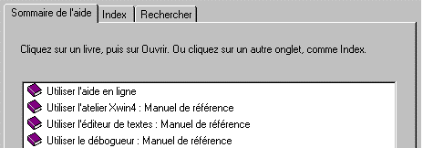

Les onglets sont utilisés sous Windows lorsqu'une fonction propose plusieurs écrans logiquement liés. A chaque écran correspond un onglet et l'utilisateur passe à son gré d'un écran à l'autre, en cliquant sur l'onglet associé à la page désirée. L'onglet associé à la page couramment affichée est présenté en avant-plan par rapport aux autres onglets.
Terminologie : Dans la suite, le mot "onglet" désignera un onglet isolé et nous nommerons "groupe d'onglets" ou par extension "onglets" un ensemble d'onglets liés entre eux.
Exemple :

Ce groupe propose 3 onglets intitulés Sommaire de l'aide, Index et Rechercher.
Ici, l'onglet Sommaire de l'aide se trouve en avant-plan et c'est l'écran qui lui est associé qui est affiché.
Harmony conserve bien entendu le même principe mais distingue trois cas d'utilisation :
Les pages Xwin concernées sont chaînées entre elles.
Rappelons qu'un masque Harmony peut être multi-écran. Au niveau de Xwin, on déclare qu'un masque est multi-écran en établissant un chaînage entre les pages concernées du masque (champs Page suivante et Page précédente dans les paramètres généraux de chaque page).
L'utilisateur passe alors d'une page à la suivante par Ctrl+Tab et à la précédente par Maj+Ctrl+Tab.
Ce chaînage est automatiquement effectué par Ywpf et transparent pour le programme appelant.
L'avantage de placer un groupe d'onglets dans ce type de masque est multiple :
- L'utilisateur voit clairement que le masque comporte plusieurs écrans.
- Si l'intitulé des onglets est bien choisi, il voit aussi immédiatement dans quelle page se trouvent les données qui l'intéressent.
- Enfin, il lui est possible de passer, d'un clic, d'une page à une autre.
Les pages Xwin concernées sont indépendantes.
Xwin permet également de placer un groupe d'onglets sur des masques indépendants. Dans ce cas, lorsque l'utilisateur actionne un des onglets du groupe, un point d'arrêt est exécuté et la main est rendue au programme appelant.
Point d'arrêt sur un groupe d'onglets chaînés.
Il est possible de définir un groupe d’onglets sur des pages chaînées avec aussi un point d’arrêt (à partir de la version 7 d'Harmony). Dans ce cas, c’est le chaînage qui est pris en compte si la page en cours fait partie du groupe de pages chaînées ; sinon, c’est le point d’arrêt qui est généré.
Exemple : dans le zoom sql, on peut ainsi cliquer sur un onglet du mode fiche en phase de consultation du tableau du mode liste.
Mais attention à la restriction suivante : lorsque l'utilisateur clique sur un onglet déjà actif, Windows ne génère aucun événement.
Dans ce cas, le programme appelant ne sera donc pas réveillé.
Dans l'exemple précédent, en cas de clic sur l'onglet du mode fiche déjà actuellement sélectionné, il n'est pas possible de programmer le passage de la consultation du tableau à une consultation de la fiche.
Page mère et pages panels à onglets